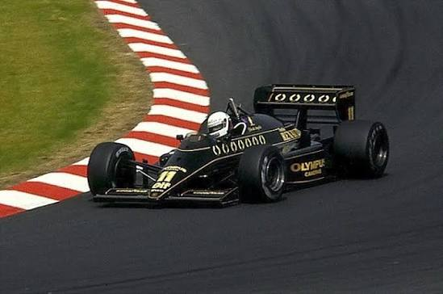

Volver al catálogo
Lotus 97T (1985)
189 €
Librea negra y dorada de John Player Special con motor Renault turbo.
- Piloto
- Elio de Angelis (#11)
- Motor
- Renault EF15 V6 turbo 1.5 L
- Escala
- 1:18
- Material
- Metal fundido y resina